Disclaimer: Each reading follows a simple published rule on public data. Together they describe the data; they are not a price forecast or a recommendation, and the data may be late or wrong. For education and research only. Use at your own risk. Not financial advice.
This site tracks palm oil from a dozen angles. This page puts the key reading from each on one screen, sorted into supply, demand, prices and the weather outlook, and says what they add up to. Each card links to the page with the detail.
Where the oil is grown, where it goes and where it is priced. A big dot is green if that place's data support palm prices, red if they weigh on them; small dots show rain in the palm belts over the last three months; arrows are the main export routes. Click a place for its numbers.
All trade numbers on the map are USDA's yearly forecasts for the same season: exports for Malaysia and Indonesia, imports for the five biggest buyers, so they compare like for like. The buyers shown take about half of world imports; the rest is in the bar below. The percentage is each country's share of world exports or imports. Prices are shown only where a free, published palm oil price exists: FOB Malaysia (World Bank, monthly average) and CIF India (SEA, monthly average); other buyers' panels give a competing oil's price for comparison. Arrows show the main export routes, not volumes. Click a place for monthly figures from MPOB, GAPKI and SEA, each labelled as one month.
How much oil there is: stocks and output in the two big producers, and the next MPOB report.
Who is buying: Malaysia's exports, India's and China's imports, and biodiesel.
Whether palm is cheap or dear against the oils and fuel it competes with, and how it has been trading.
Dry weather cuts palm output with a long lag, so today's weather is next year's supply.
Every palm oil page on the site, by theme.
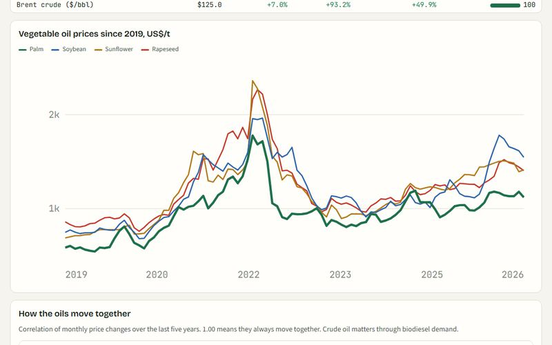
PricesPalm Oil Market MonitorScorecard, spreads, valuation, El Niño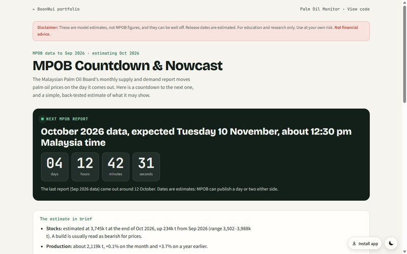
SupplyMPOB Countdown & NowcastNext report, forecast, track record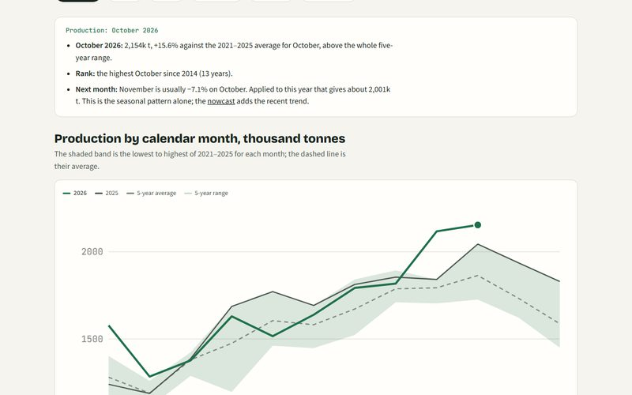
SupplySeasonalityThis year against the last five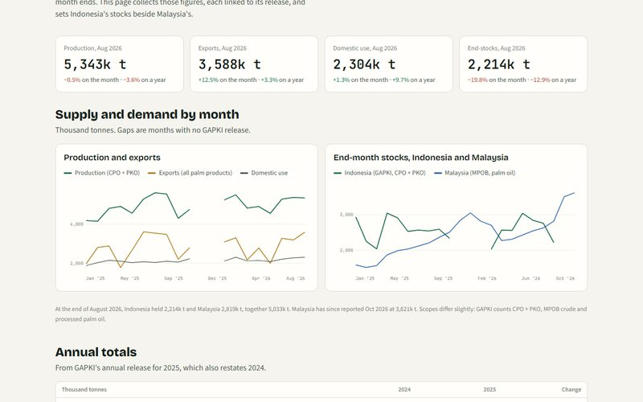
SupplyIndonesia TrackerGAPKI monthly balance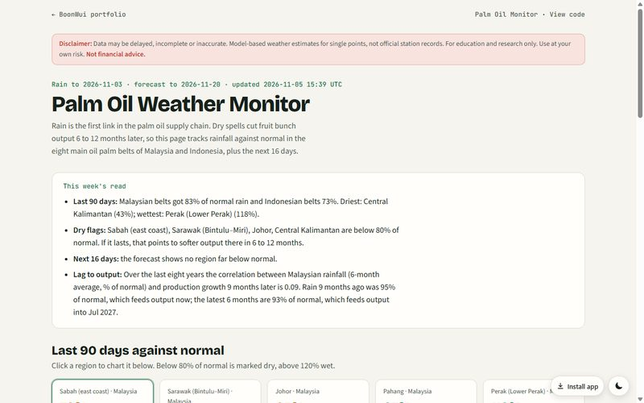
SupplyWeather MonitorRain in the palm belts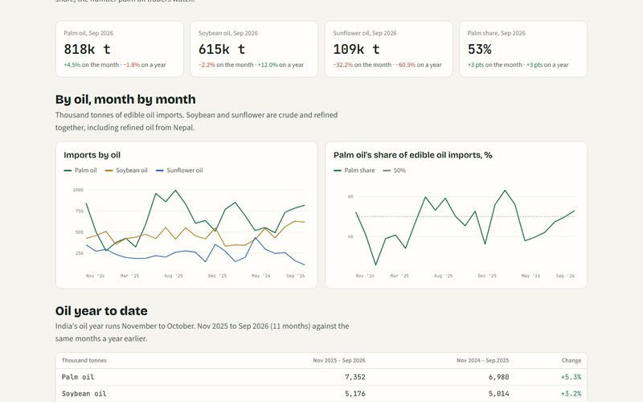
DemandIndia ImportsPalm against soy and sunflower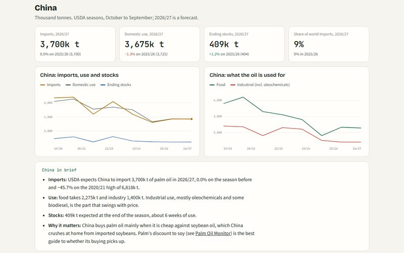
DemandWorld Palm DemandChina, India and the big buyers (USDA)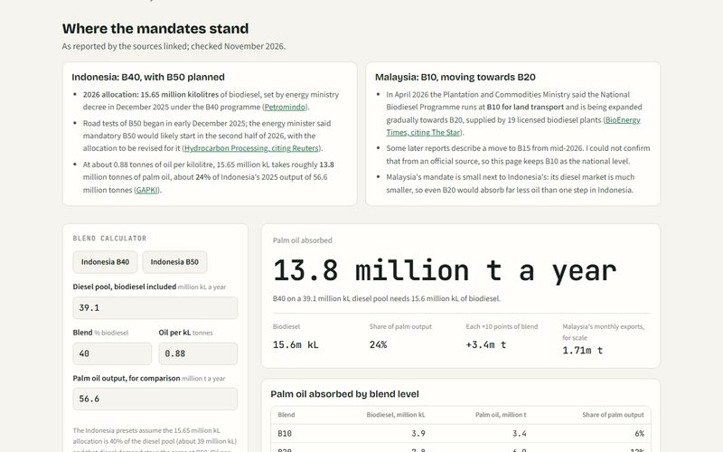
DemandBiodiesel TrackerMandates and the oil they absorb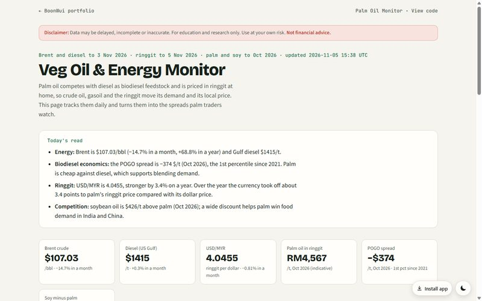
DemandVeg Oil & Energy MonitorPOGO, Brent and the ringgit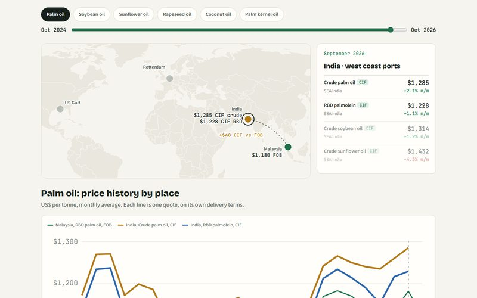
PricesVeg Oil Price MapFOB, CFR and CIF by port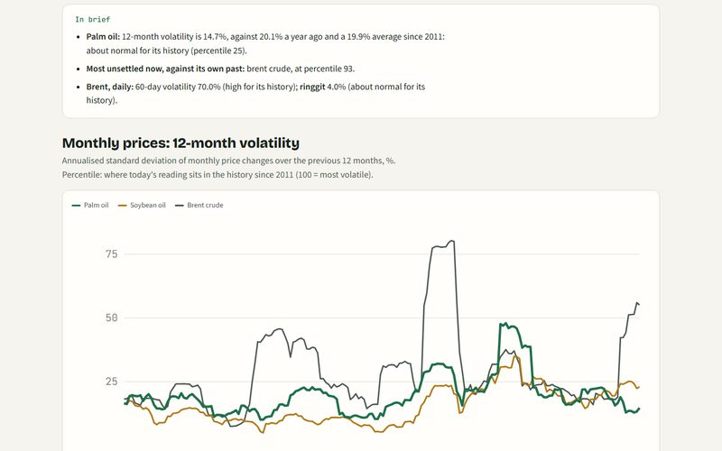
PricesVolatilityHow jumpy prices are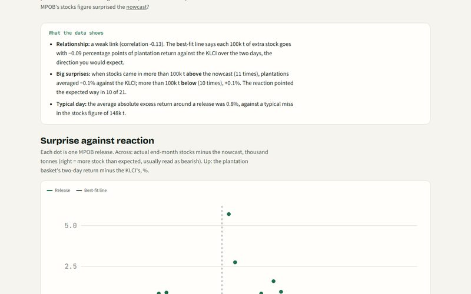
PricesMPOB Day Event StudyHow plantation shares react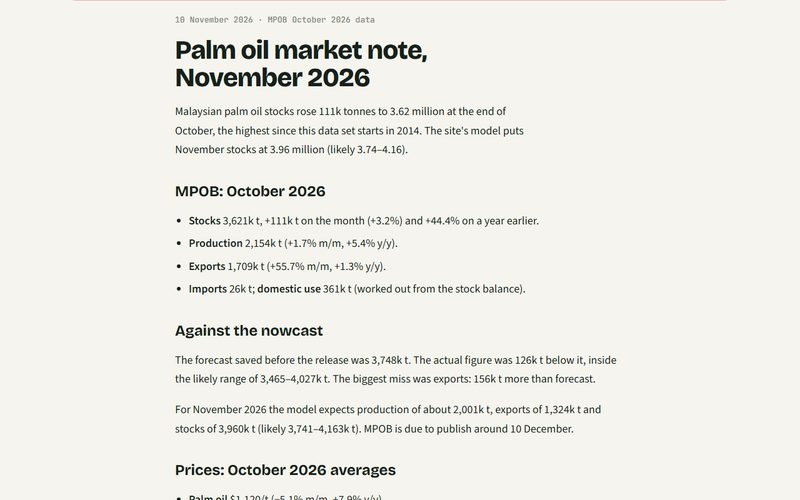
Write-upsPalm market notesOne each MPOB release day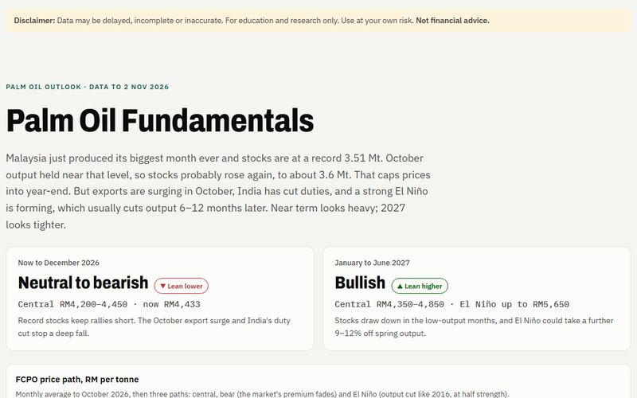
OutlookPalm Oil FundamentalsThe longer outlook to mid-2027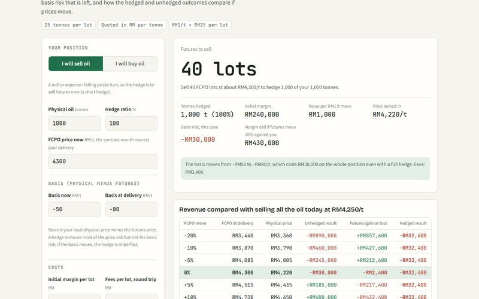
ToolFCPO Hedging CalculatorLots, margin and basis risk